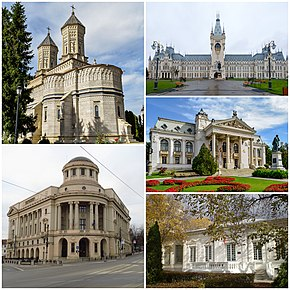

Iași (livresc Iașii, respectiv Târgu' Ieșilor) este municipiul de reședință al județului cu același nume, Moldova, România. A fost capitala Moldovei în perioada 1564–1859, una dintre cele două capitale ale Principatelor Unite între 1859 și 1862 și capitala Regatului României între 1916 și 1918 (în perioada Primului Război Mondial, atunci când Bucureștiul s-a aflat sub ocupație germană).
La recensământul din 2011, municipiul Iași avea o populație de 290.422 și era al patrulea oraș ca mărime din România. Conform Eurostat, cu o populație de 507.100 locuitori (în 2019), zona metropolitană Iași este a doua ca mărime din România (după București).[7]

Monumentele orasului
Cea mai bogat documentată explicație este că numele orașului își are originea în Evul mediu timpuriu, de la poporul alanic al iașilor, dar istoricii protocroniști au altă teorie referitoare la originea numelui „Iași”. Ei afirmă că numele provine de la un trib sarmat mult mai vechi: iazigii din Antichitate, menționați de Ovidiu ca „Ipse vides onerata ferox ut ducata „Iasyx”/ Per media Istri plaustra bubulcus aquas” și „„Jazyges” et Colchi Metereaque turba Getaque/ Danubii mediis vix prohibentur aquis”.
Atât iazigii, cât și alanii (dintre care făceau parte iașii) erau două ramuri din cele trei ale sarmaților, a treia fiind roxolanii. Alanii (care erau creștinați) au dat în trecut Prutului denumirea de Alanus fluvius iar orașului Iași, Forum Philistinorum (posibil Târgul amatorilor de vin). De la această populație derivă forma la plural Iașii sau Târgu' Ieșilor. De asemenea, Moldova a fost numită și Alania la 1320 în harta lui Giovanni di Carignano.[9][10][11] Gh. Ghibănescu a arătat în cartea sa că în 1238, Berke, fratele lui Batu han (conducătorul Hoardei de aur), zdrobește armata alanilor conduși de Caciar Ogala (lângă Marea de Azov) și determină exodul a aproape 10.000 de alani în Moldova[11]. Alanii (iașii) se stabilesc în zona în care va fi menționat orașul Iași. După aproape 60 de ani, în 1299-1302, majoritatea alanilor părăsesc Moldova și trec în Imperiul Bizantin, conform unor date furnizate de bizantinul Nichifor Gregoras. Au mai trecut și alte triburi de alani prin Moldova dar s-au stabilit în final în Ungaria, împreună cu cumanii. Urmașii alanilor din Caucaz sunt osetinii.
Media
Palatul CulturiiPalatul Culturii din Iași este o clădire emblematică, construită, în perioada 1906 - 1925, în perimetrul fostei curți domnești medievale moldovenești, pe locul fostului palat domnesc. Clădirea este înscrisă în Lista monumentelor istorice, având cod LMI IS-II-m-A-03957.01, și din ansamblu mai fac parte și ruinele curții domnești (cod LMI IS-II-m-A-03957.02).
Edificiul a servit inițial drept Palat Administrativ și de Justiție. În anul 1955, destinația clădirii a fost schimbată într-una culturală, devenind gazda unor instituții culturale din Iași.
Astăzi, Palatul Culturii este sediul Complexului Muzeal Național „Moldova”, ce cuprinde Muzeul de Istorie a Moldovei (1916), Muzeul Etnografic al Moldovei (1943), Muzeul de Artă (1860), Muzeul Științei și Tehnicii „Ștefan Procopiu” (1955), precum și Centrul de Conservare-Restaurare a Patrimoniului Cultural (1975). Până la începerea lucrărilor de renovare, în aripa de nord-est a palatului se afla sediul Bibliotecii Județene „Gheorghe Asachi” (1920).